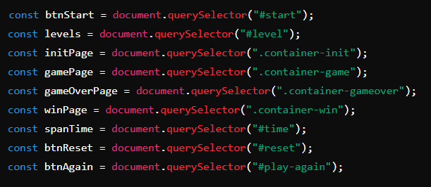
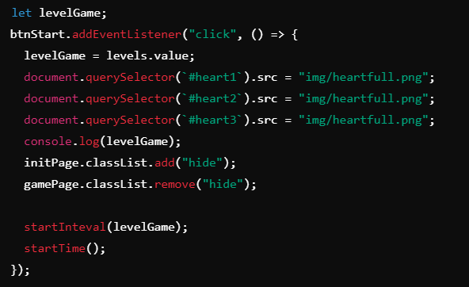
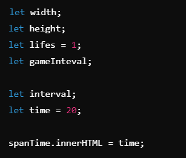
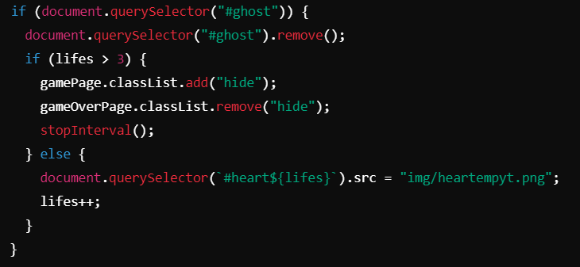
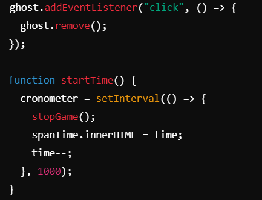
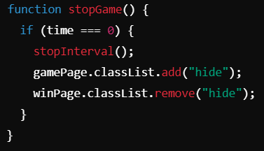

Aprenda como funciona o Ghost Atack e a sua lógica por trás
Resumo da Lógica do Jogo
1. Seleção de Elementos HTML:

2. Inicialização do Jogo:
Aqui, o código aguarda um clique no botão de "início" (btnStart). Quando o botão é clicado:
3. Variáveis e Controles do Jogo:
O código declara variáveis para largura e altura da janela, vidas do jogador (iniciando em 1), o intervalo do jogo, e o tempo disponível para o jogo (20 segundos). O tempo é exibido na tela.
4. Funções para Tamanho da Página e Posições Aleatórias:

5. Lógica do Fantasma:
Se um fantasma já estiver presente, ele é removido. Se o jogador já tiver perdido 3 vidas, o jogo termina, e a tela de "Game Over" é mostrada. Se ainda houver vidas, uma vida é removida.
6. Interações e Contagem do Tempo:
O jogador pode clicar no fantasma para removê-lo, e a função startTime começa uma contagem regressiva de 20 segundos, atualizando o tempo na tela a cada segundo. Quando o tempo chega a 0, o jogo termina.
7. Parar o Jogo:
A função stopGame verifica se o tempo acabou. Se sim, ela para os intervalos do jogo e mostra a tela de vitória.
8.Reiniciar o Jogo:

Os botões de reiniciar e jogar novamente recarregam a página, reiniciando o jogo.